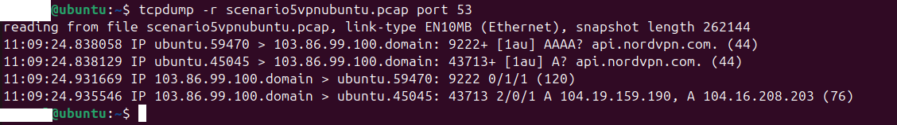
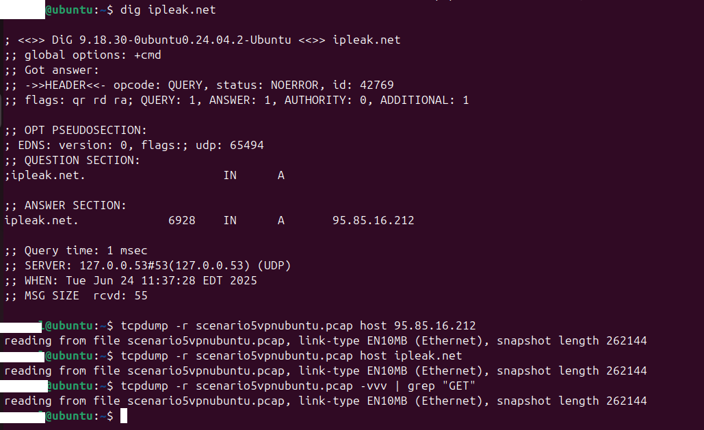
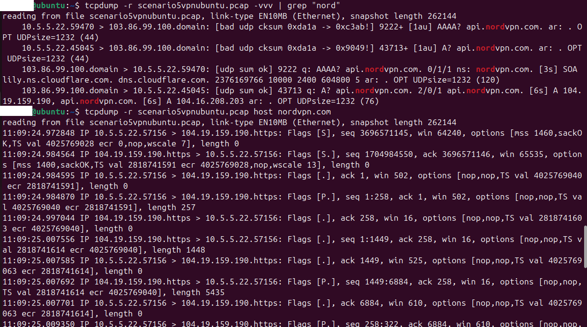
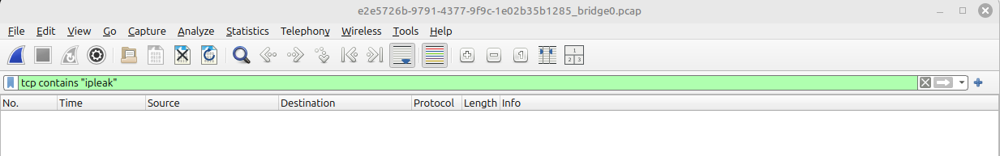
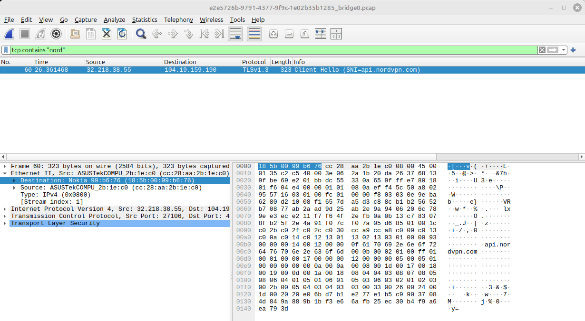

Project: What does my ISP see? Analyzing Packets. Scenario 5: VPN.
Scenario 5: VPN. Breakdown:
Overview
A VPN service encapsulates your network traffic from your computer to their server. That server then acts as you to the world. This way the traffic between you and your internet service provider (home ISP, or random coffee shop) is fully encrypted and your ISP, or whoever you get your wifi from, should not be able to read that traffic.
That VPN provider now acts as your ISP in a way, and can see your traffic. You are shifting who sees your traffic from the ISP to your VPN provider. This means you are trusting that VPN provider more than your ISP. Which makes sense if you connect at a random wifi hotspot.
The ISP will still see you are connected to a VPN and many online services have ways of detecting this.
Setup
I set up a new virtual machine with Linux Ubuntu installed and Firefox in previous scenarios. I am continuing to use the same operating system.
This time I have installed a VPN and turn the killswitch on. This should prevent any packets from leaking outside the VPN service.
I will again look to capture packets from the same Ubuntu host that is browsing to see what exits the local host, and again on the OPNSense firewall between my router and the ISP ONT to see what exits my home network. I will also examine the Zenarmor NexGen Firewall Plugin live logs to watch for connections being made and traffic.
I hope to see only encrypted traffic in this scenario.
Activity on the local host:
The website used will be https://ipleak.net/. I set all devices to capture traffic, then load the webpage.
I capture all traffic using tcpdump and write it out to a file.
sudo tcpdump -w scenario4httpsdohubuntu.pcapI switch VPN modes to include VPN Obfuscate and Tor over VPN and reload the webpage after each change. I tested these modes together in one packet capture because I dont expect it to make any difference as far as the traffic seen in transit from my end.
Reading the packet capture file and filtering for port 53 shows all the DNS queries. Ipleak is not in the list of requests so this must be encrypted and not able to be deciphered. The only thing in the list are nordvpn and a few cloudflare IPs.
There were no visible ‘GET’ commands and Ipleak did not appear anywhere in the packet capture, either with its domain name or IP.
I next searched for the VPN service.
Other than the connection to the VPN, nothing else could be seen from this packet capture on the Ubuntu host.
On the firewall beyond the router:
Inspecting the firewall’s live logs showed no DNS requests for Ipleak. This makes sense since they are encrypted.
The firewall did see the TLS encrypted connections to the VPN service.

I loaded the packet capture from this firewall into Wireshark for further analysis.
Wireshark is filtering out port 53 to view DNS queries. Seen in here is the UDP traffic for the VPN.

Wireshark filtering for Ipleak but we see nothing. It must all be encapsulated in encrypted traffic.
Wireshark filtering for the the VPN. All It detects is the one TLS packet.
This is the last hop where I can capture packets. This is the same data that is being seen outside my home network.
Conclusion:
Anyone intercepting this traffic can only see the connection to the VPN service itself. Everything is encapsulated inside this connection. Once this traffic reaches the VPN server it becomes encapsulated and proceeds to its final destination.
This is the equivalent of sending an encoded letter inside a package through the mail to an intermediary who opens the package and sends the letter to its real destination.
If someone inspects your package they see traffic between you and the intermediary. If someone farther along sees your letter, they only see traffic between the intermediary and the destination.
There are still plenty of ways of being tracked on the internet. But this method is one of the ways to encapsulate your traffic and limit the eavesdropping possibilities from your local wifi hotspot or ISP.
That’s it!